佐賀県神埼郡吉野ヶ里町 代表 米光 知子 様
| いただいたご指摘 | どう直したか |
|---|---|
| 冒頭が少し弱い | 「これ、サウナじゃないんです」という否定から入る形に変えました。説明ではなく問いかけから始まるので、スクロールの手が止まります |
| テロップの横に黒い線のようなものが入る | 文字の下に敷いていた黒い帯をやめました。文字の形に沿ったやわらかい影だけで浮かせています |
| 「スッキリした」だけだとサウナと同じに見える | 違いを2段階で見せる構成に組み直しました（下記「この動画で伝えること」） |
| 内装が実際のお店と違う | いただいたお写真をもとに、板張りの壁・黄色いマット・青いカーテン・木箱の観葉植物・着替えスペースまで作り直しました |
| 登場人物は一人の方がよい | お客様役の女性1名だけにしました。全カット同じ方です。わんちゃんのカットも人は写していません |
| カッパのようではなく、服を着ている方がよい | お写真どおりの緑の半袖・半ズボンの施術着に統一しました |
| 外観はもっと綺麗に見せたい | 実物をベースに、配線や雑多なものを写さない形で整えています |
前回いただいた「ただスッキリした、だとサウナと一緒に見える」というご指摘が、この動画のいちばん大事な論点だと考えました。そこで、違いを2つに分けて見せています。
①素材の差（カット03〜05）— よもぎ蒸しのサロンの多くは「国産のよもぎ」を売りにしています。Le,Ciel 様はその裏返しで、韓国産＝本場が武器です。さらに「韓国では600年以上受け継がれてきた」という歴史を1枚足して、「香りが濃い」という感想に裏づけを持たせました。
②体験の差（カット10〜12）— サウナとの違いを、体感で言い切ります。「熱くない」「下半身から蒸気で」「のぼせずに長く座っていられる」。この3枚は、サウナでは絶対に言えない言葉です。
そしてカット13で①に戻します。「しかも、韓国よもぎの香りに包まれて」——ここで素材と体験がつながり、他店とも、サウナとも、はっきり別のものになります。
前回「よもぎ蒸しの効果を3枚くらい入れてもいいのでは」とご相談いただきました。おっしゃるとおり、そこが伝わらないとサウナと区別がつきません。
ただ、「デトックス」「老廃物を出す」「冷えが治る」「子宮を温める」といった表現は、よもぎ蒸しの広告では薬機法（医薬品的な効能効果の標榜）に触れます。よもぎ蒸しは医薬品でも医療機器でもないため、症状が良くなると受け取れる言い方はできません。「デトックス」は根拠がないと公的に整理されているため、景品表示法（優良誤認）の面でも危険です。
そこで効能のかわりに「構造の違い」を言う形にしました。熱くない／下半身から蒸気で／のぼせずに長く座れる——これらは事実の説明であって効能ではないので、安心して出せます。そのうえで、見ている方には「サウナとは違うものだ」としっかり伝わります。
歴史の1枚（「韓国では600年以上、受け継がれてきました」）も同じ考え方です。効能を1つも言わずに、本場であることの裏づけになります。
ナレーションを入れず、音楽とテロップだけで伝えていく組み立てです。この組み立てはそのままに、「売り」だけを入れ替えました。参考の動画は「国産のよもぎ」を打ち出していますが、Le,Ciel 様は「韓国産＝本場」が武器だからです。
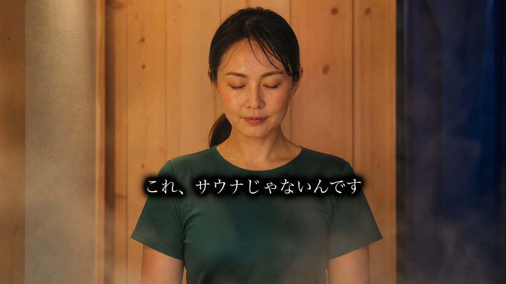
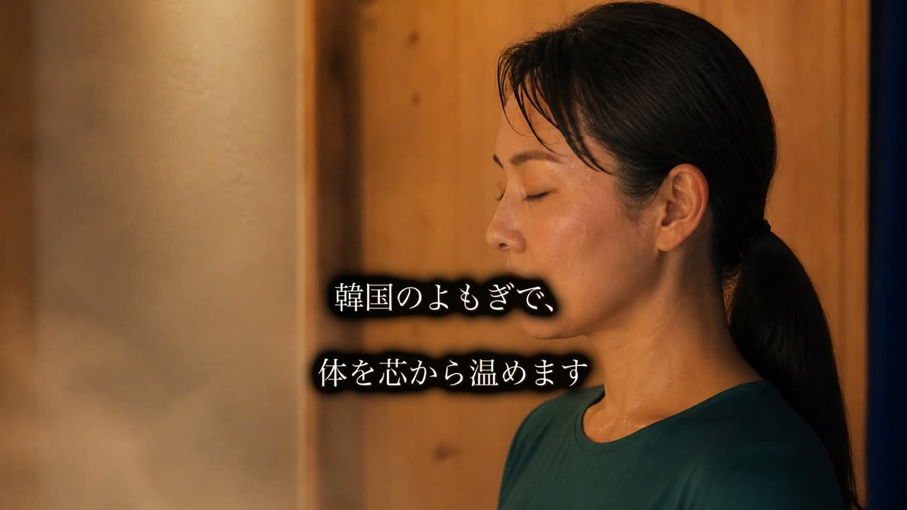
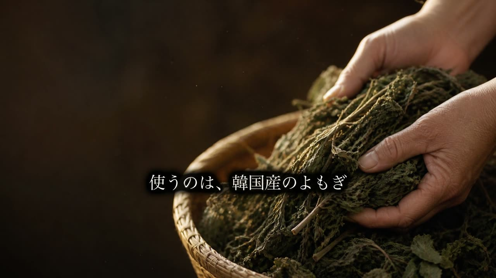
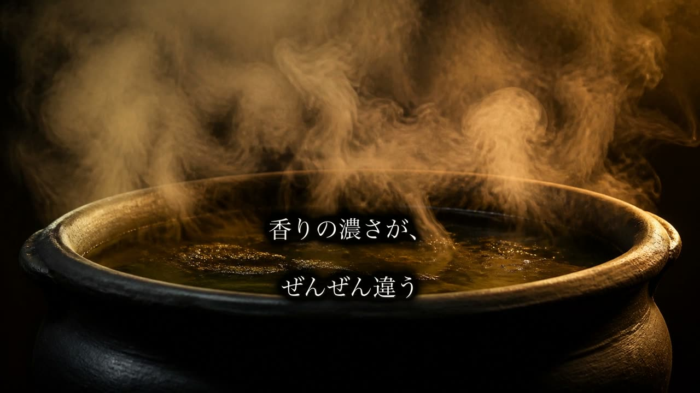
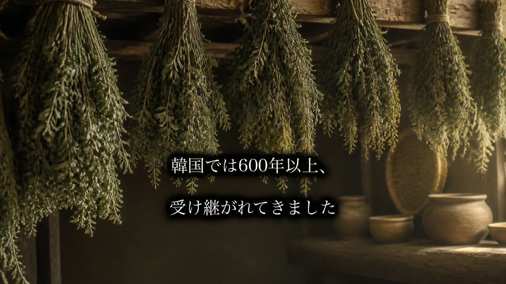
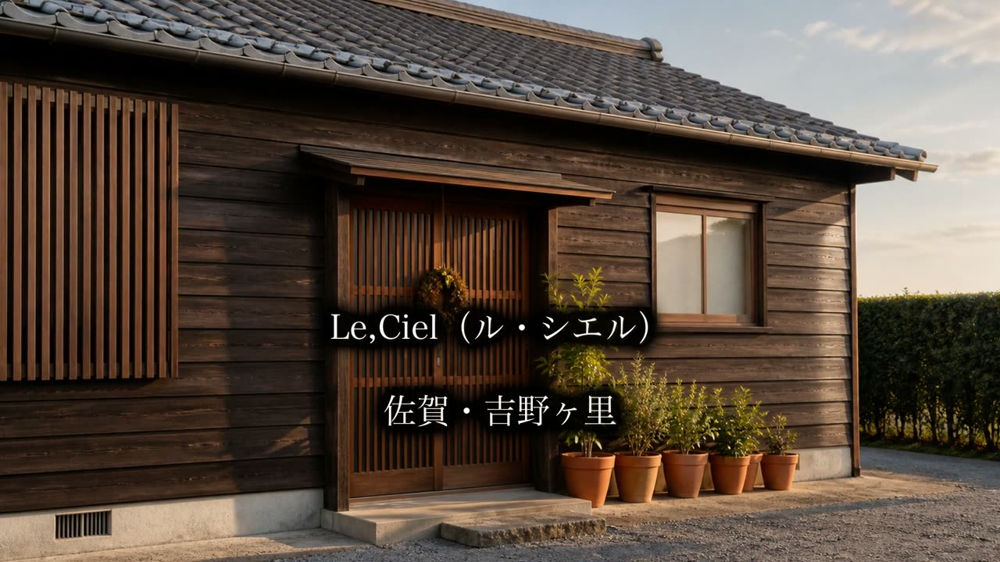
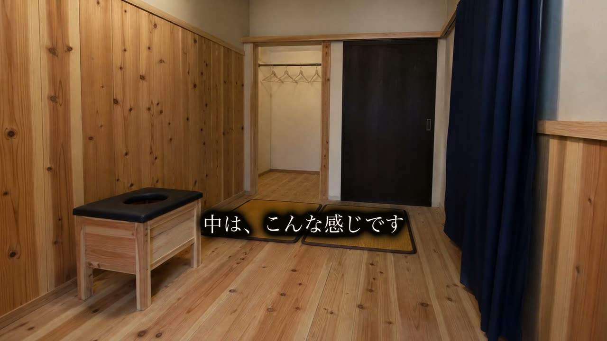
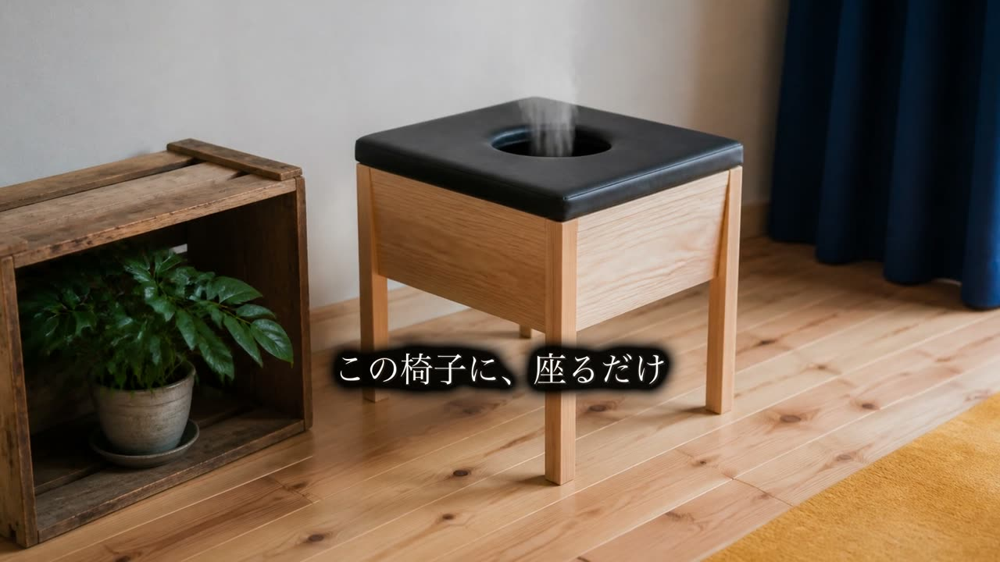
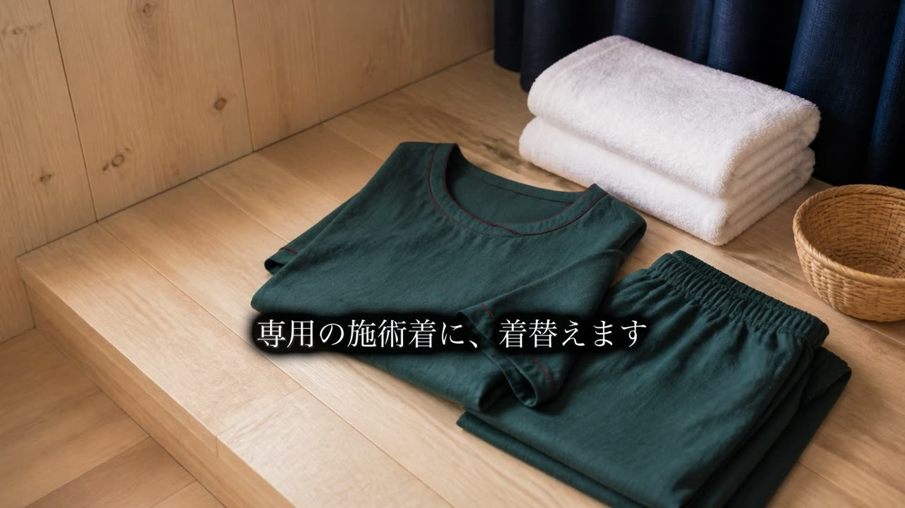
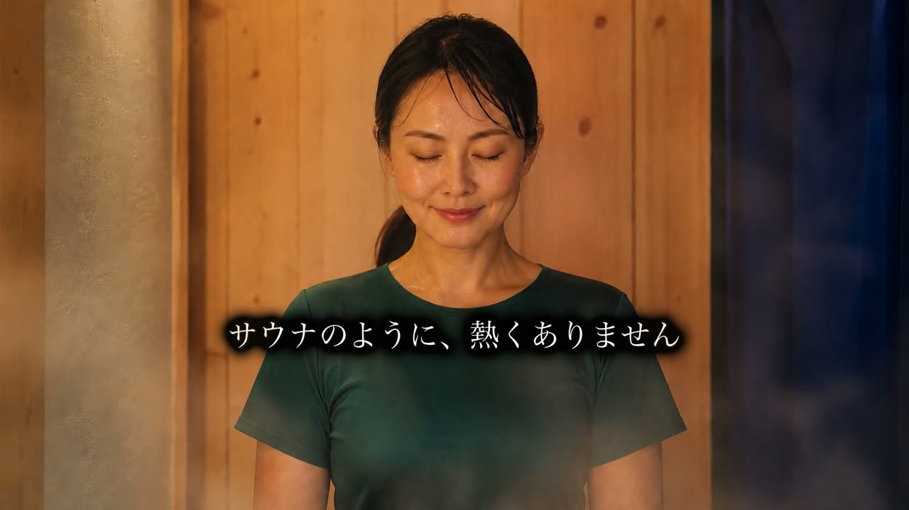
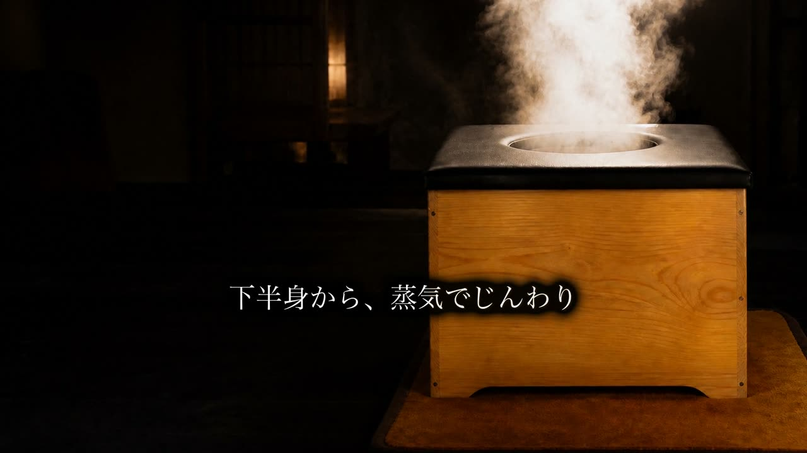
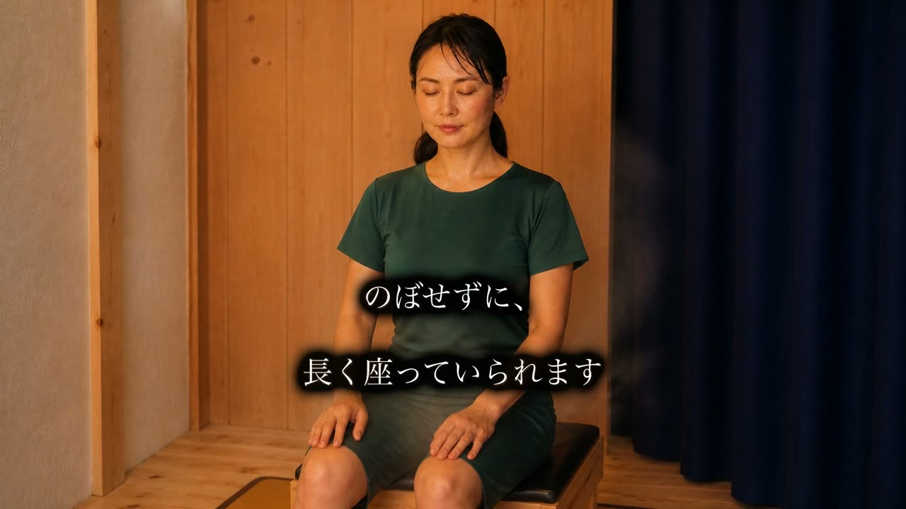
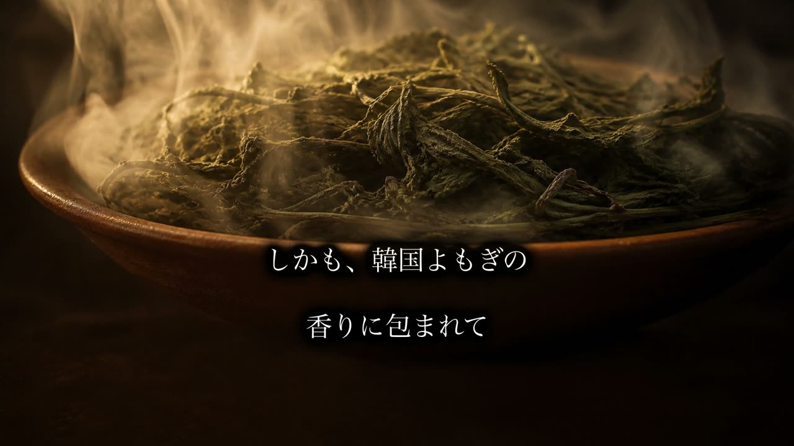
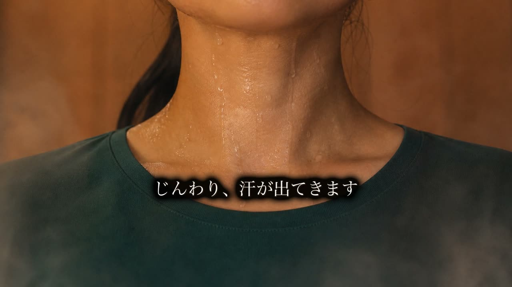
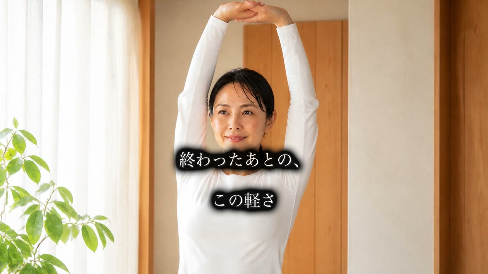
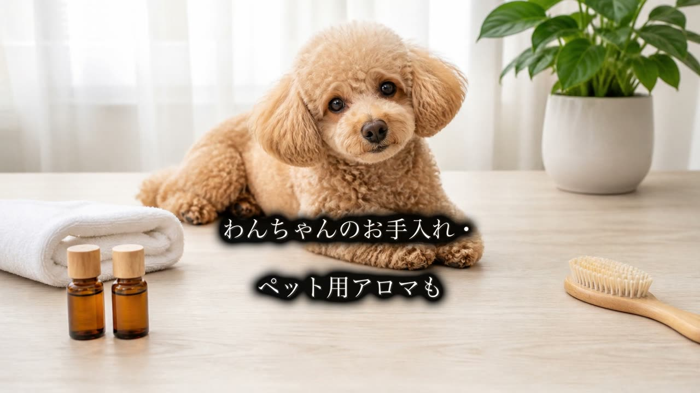
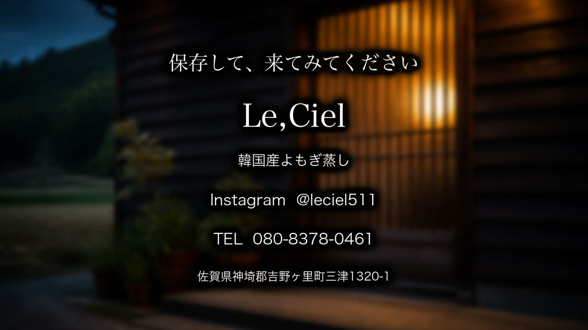
| 項目 | 仮の設定 | ご確認いただきたいこと |
|---|---|---|
| 画面の向き | 横（16:9） | ホームページ・YouTube・店頭モニターまで一番つぶしが効くため横型を基本にしています。Instagram用の縦型が必要でしたら同じ構成で組み直します |
| 長さ | 65秒 | もっと短い版も必要か |
| ナレーション | なし（音楽のみ） | 音を消して見る方が多いため、テロップだけで伝わる形にしています。声を入れたいかどうか |
| BGM | 落ち着いた癒し系 | もっと明るい／もっと静か のご希望 |
| ご出演 | 米光様は出していません | お客様役の女性1名のみで作っています。米光様のご出演をご希望かどうか |
| 屋号の表記 | Le,Ciel | ロゴ・看板の正式な書き方（カンマの有無） |
| ご住所の表記 | 佐賀県神埼郡吉野ヶ里町三津1320-1 | いただいたシートは「神崎郡」でしたが「神埼郡」で合っていますか。番地まで出してよいかも教えてください |
| 料金・営業時間 | 出していません | 出す場合は正確な数字をご共有ください |
| ハンドメイド雑貨 | 入れていません | 入れた方がよいか |